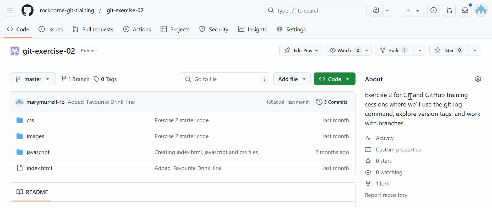

3.2 Cloning a Forked Repository
If we all want to clone the same repository but have our own copies that wont affect each others, we need to fork the repository. This will create a copy of the repository under your individual GitHub accounts. After forking the repository, we then need to clone it to ensure that any changes we push to GitHub won't affect the original repository.
| Feature | Cloning a Repository | Cloning a Forked Repository |
|---|---|---|
| Definition | Copies a remote repository to your local machine. | Copies a forked version of a repository to your local machine. |
| Ownership | You do not own the original repository. | You own the forked repository under your GitHub account. |
| Making Changes | Can contribute by creating branches and pull requests. | Can freely make changes and later submit pull requests to the original repository. |
| Use Case | Used when working within a shared project. | Used when you want to modify a project independently before contributing back. |
Step 1 of 3
Forking a Repository on GitHub
- Open this link and click on 'Fork' in the top right corner to create a new fork.

- Untick ‘copy the master branch only’, because we want to copy all branches
- Click ‘Create Fork’
- Copy the forked repository URL
Step 2 of 3
Cloning The Forked Repository
Cloning a forked repository follows the same process as cloning any other repository.
Note: Again, make sure you're in the git-exercises working directory in Git Bash. You can use the cd command to navigate out of your current directory.
Run the following command in Git Bash
git clone forked_repository_link
Step 3 of 3
Open the index.html File
- Locate the git-exercise-02 folder on your laptop
- Right click on the index.html file
- Open this with your preferred browser
Lesson Summary
- Explored forking a repository
- Learned how to clone a forked repository
- Forking allows us to create our own copy of a repository to work on independently
- Cloning a forked repository lets us modify it locally